La Sécurité Informatique
Cellulaire et Réseaux sociaux:
Présentation : Christophe Agostini
13 Décembre 2022
Comment télécharger cette présentation
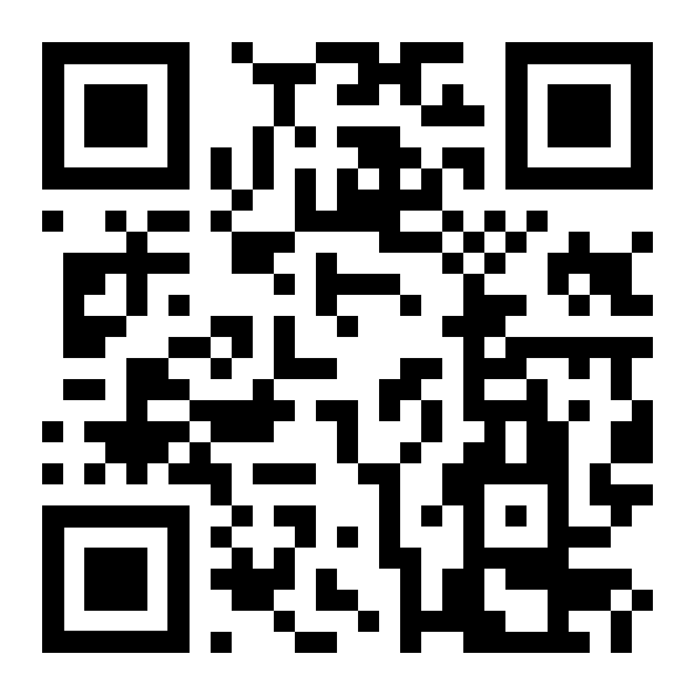https://github.com/christopheagostini/lpa
Sommaire
Présentation
Thème 1 : Introduction à la sécurité informatique
Thème 2 : Les mots de passe
Thème 3 : Les virus informatiques
Thème 4 : La protection des informations personnelles
Thème 5 : La sécurité en ligne
Conclusion
Conclusion : et vous ?
Présentation
Christophe Agostini
Mon expertise
Rien à vendre
Thème 1 : Introduction à la sécurité informatique
La sécurité informatique : Protégeons-nous ensemble !
C'est quoi pour vous, la "sécurité" informatique ?
Qu'est-ce que la sécurité informatique ?
Ensemble des moyens humains, organisationnels, juridiques et surtout techniques visant à empêcher l'utilisation des données sécurisées et ou confidentielles par un tiers non autorisé
Petit jeu :
Quel point en commun relie ces compagnies :


 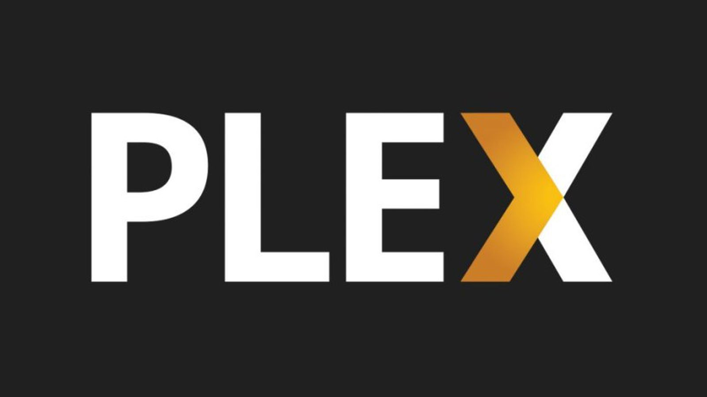
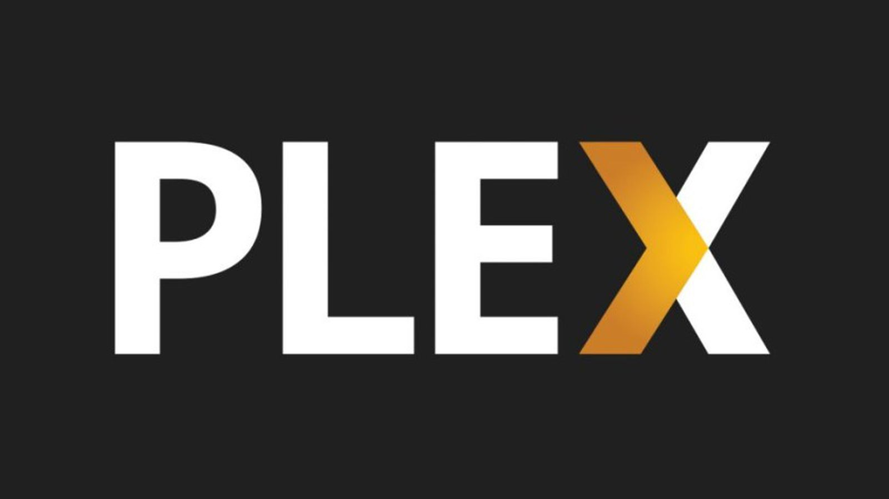


Réponse :
Elles se sont toutes fait "hacker" (data breach) ...
... en 2022
Source : FirewallTimes et Wikipedia
Et en 2021 ...
Ou avant ...

Et même chez nous ...

Donc mon travail :
Protéger mon client en imposant les normes les plus appropriées afin de limiter les risques
Thème 2 : Les mots de passe
Pourquoi les mots de passe sont importants ?
Pour limiter les accès de quelqu'un, encore faut-il savoir qui il est ...
Comment créer un mot de passe fort ?
Plus il y'a de lettres, de nombres et de caractères spéciaux ... mieux c'est
Concernant les mots de passe
Il est préférable de :
- Ne pas réutiliser le même entre différents sites
- Changer de structure
- Ne pas penser uniquement à la régle de lettre majuscule, minuscule, chiffres ...
Testons la difficulté à hacker les mot de passe :
Utiliser un gestionnaire de MDP :
Ne partagez pas vos mots de passe !
Un mot de passe c'est comme une brosse à dent ...
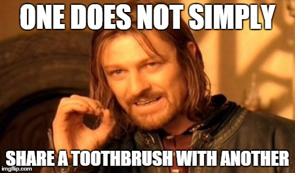Thème 3 : Les virus informatiques
Concernant les virus :
Qu'est-ce qu'un virus informatique ?
Comment les virus se propagent-ils ?
Comment se protéger des virus ?
Les nouveaux virus : les extensions de navigateurs
Thème 4 : La protection des informations personnelles
En ligne ou ailleurs :
Pourquoi nos informations personnelles sont-elles importantes ?
Comment protéger nos informations personnelles ?
Thème 5 : La sécurité en ligne

Quand je suis sur internet
Les règles de base pour rester en sécurité en ligne
Les réseaux sociaux et la sécurité
Conclusion
En bonus
Vous trouverez dans les prochaines diapositives du contenu additionel qui ne rentre pas dans notre 45 de présentation
Votre cellulaire
La révolution du téléphone intelligent
Un changement drastique de notre façon d'utiliser Internet
Une révolution technique populaire
Un marché en plein changement et pas forcément mature au début
Une (r)évolution informatique
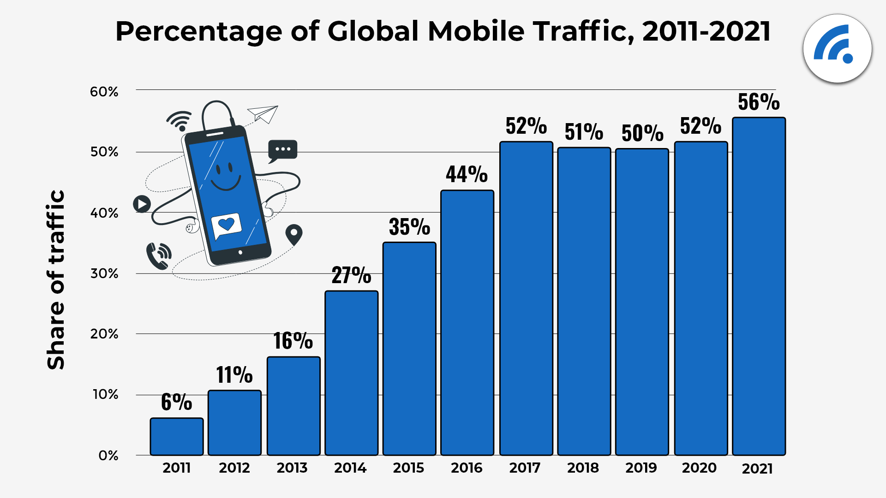Autre statistiques
Les téléphones intelligents représentent 80% de la navigation sur les réseaux sociaux
95,1% des utilisateurs de Facebook utilisent leur cellulaire pour accèder au service conte 86% pour Twitter et 60% pour LinkedIn
Source : Broadbandsearch
Deux catégories de téléphone intelligent
Téléphone dit "fermé" : Apple Iphone
Téléphone dit "ouvert" : Android
Part de marché
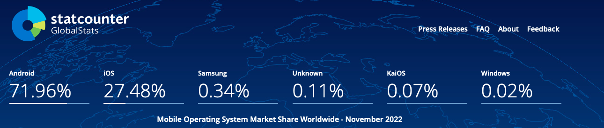Source : Statcounter
Fraude générique
Le sms type "erreur" auquel vous êtes invités à répondre
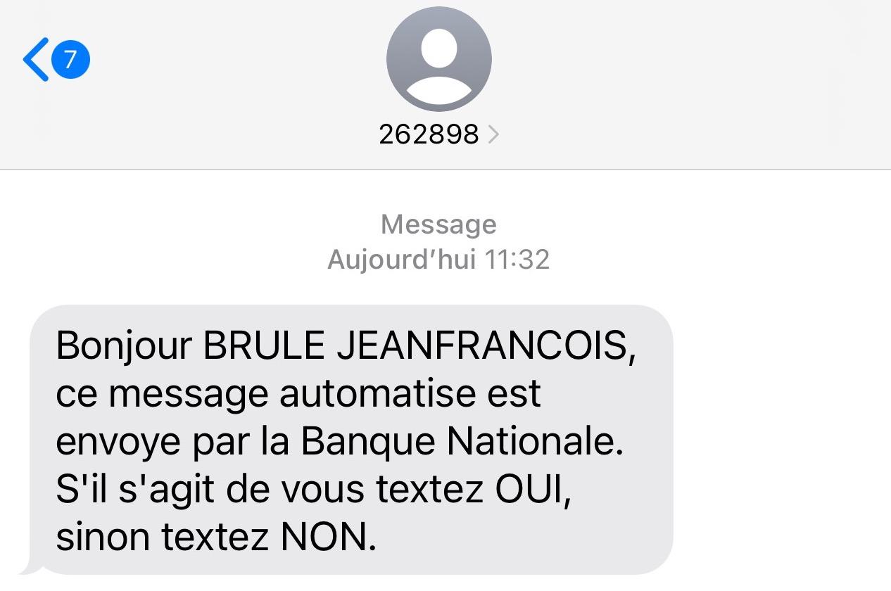Fraude générique
Le sms qui incite à cliquer sur un lien
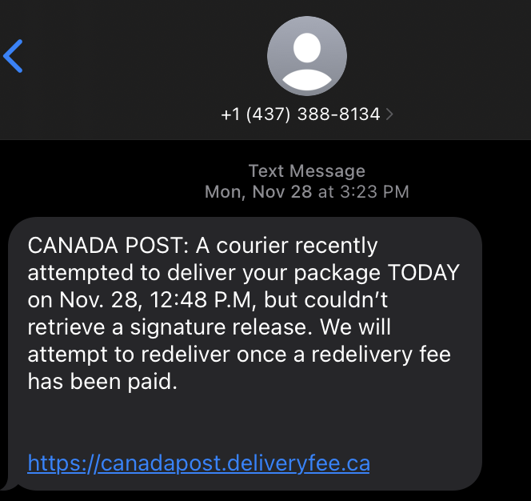Comprendre les domaines
Pour éviter beaucoup d'erreur, il suffit de comprendre la base des noms de domaines
https://ouvert.canada.ca
ouvert (sous domaine)
canada (domaine)
.ca (domaine de premier niveau)
Source : Plus d'information ici
Fraude générique
Regardez à nouveau l'adresse :
Fraude générique
Dernier exemple :
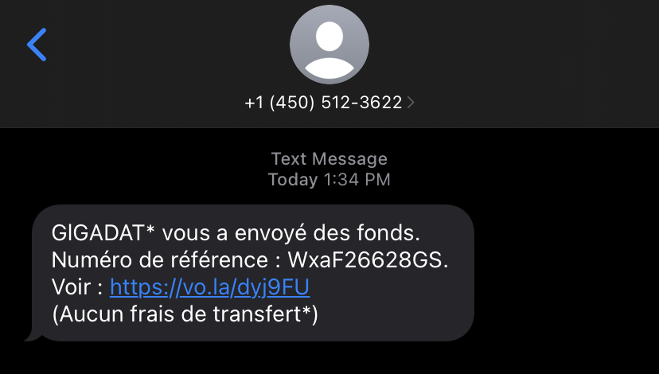Fraude générique
Et toutes les raisons sont bonnes :
Article sur le sujet
Excellent article de Radio canada sur le sujet de l'hameçonnage au Québec, avec notamment des témoignages de victimes, de fraudeurs et des méthodes employés
Source : Radio Canada
Spécificité des téléphones Android
Il est possible d'installer des applications qui ne viennent pas du "store"
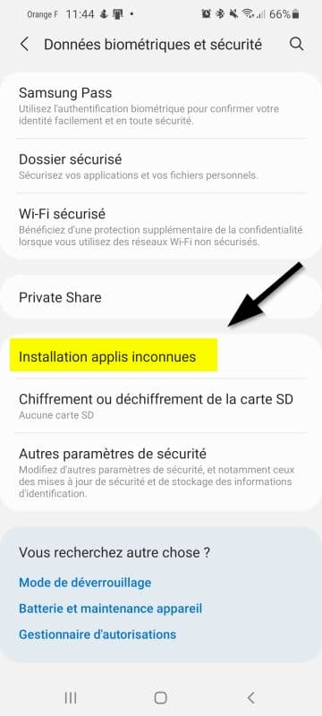Spécificité des téléphones Android
Si vous le faites soyez vigilant ... et attentif
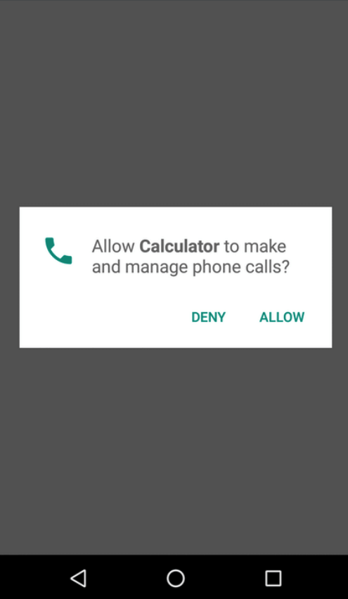Spécificité des téléphones Android
Y compris si l'application est déjà installé (téléphone douteux)
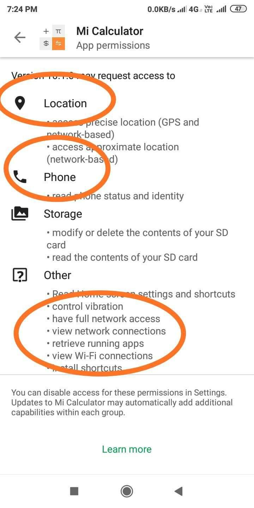Les réseaux sociaux
Les risques sur les réseaux sociaux
Usurpation d'identité
Publicité pour sites frauduleux
Contacts indésirables
Cyberharcèlement
Mais connaissez-vous vos réseaux sociaux ?
Question :
Qui possède un compte Facebook ?
Et google ?
Comment vivent les GAFA (-A)?
Les revenus viennent :
1- De la publicité ciblée
2- De la publicité ciblée
3- De la publicité ciblée
4- Partenariat d'audimat ... pour de la publicité ciblée
Facebook veut donc
- que vous regardiez ses pubs
- que vous accèdiez aux autres sites (articles, vidéos, etc.) via facebook
- que vos posts commentaires soient public (plus de réactions)
- obtenir le plus d'information sur vous afin de mieux vous cibler (nouvelles qui vous font réagir, etc.)
Et vous voulez probablement :
- vous assurez que vos publications, vos photos ou vos documents personnel ne soient pas accessibles à tous
- de préférence ne pas vous faire suivre par facebook lors de vos naviguations en dehors du site
Les conseils :
- NE PAS PUBLIER DE PHOTOS D’ENFANTS
- configurer les paramètres de confidentialités (capture d'écran)
- Plugin pour bloquer les mouchards facebook
- N'oubliez pas que ce que vous mettez en ligne ... est en ligne
Facebook - paramétres
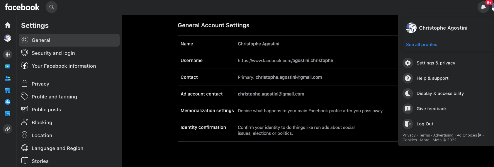Facebook - sécurité

Facebook - menu déroulant

Exemple de mouchard

Utilisez un plugin logiciel comme "FaceBook Container" developpé par Mozilla
Publicité sur Facebook

Encore une fois, remarquez l'adresse (aka URL)
Publicité sur Facebook
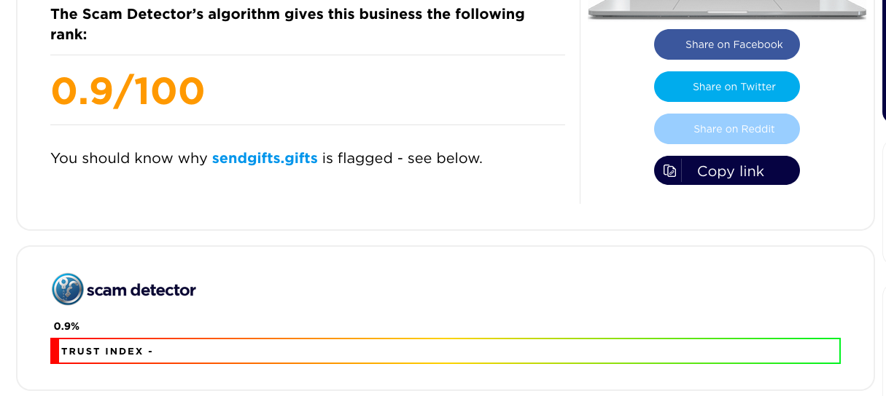Publicité sur Facebook
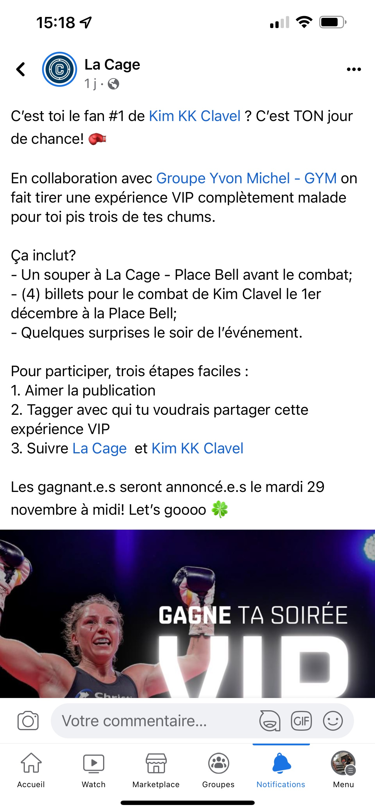Publicité sur Facebook
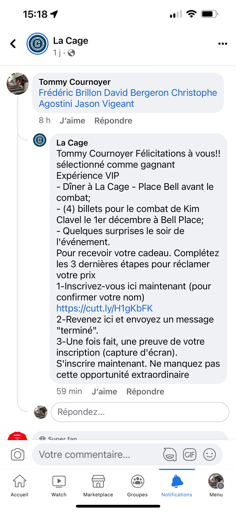Publicité sur Facebook
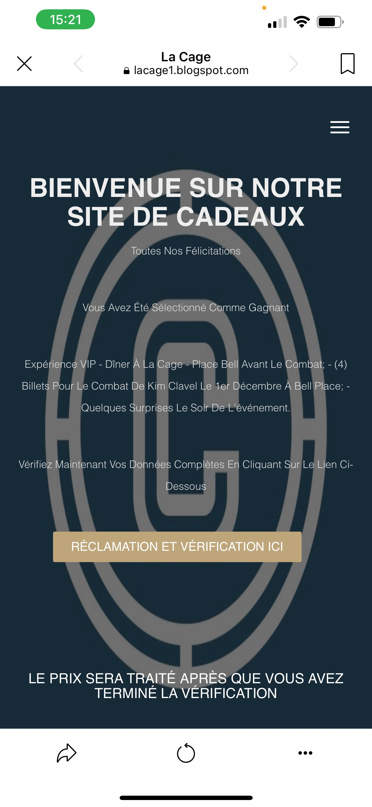Publicité sur Facebook

Publicité sur Facebook

Publicité sur Facebook
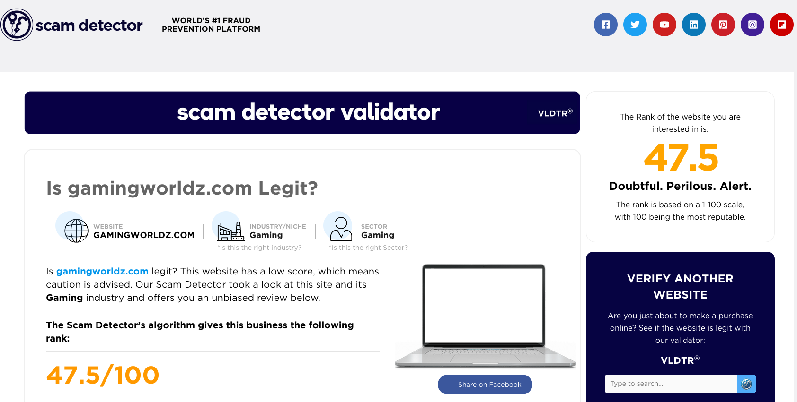Mais il n'y'a pas que du négatif avec les RS
- Ils permettent de communiquer facilement avec les gens
- Promotion du transfert de connaissance
- Facilitent la communication pour les gens anxieux
- Et surtout , ils permettent le SSO ce qui renforce la sécurité
Le Single Sign On (SSO)
Principe de base
À utiliser le plus souvent possible
En complément d'un mot de passe fort et de MFA, cela diminue les risques d'usurpation d'identité
Vous l'avez peut-être vu avec les sites gouvernemetaux (ex : celui de l'agence du revenu du Canada)
Exemple de SSO
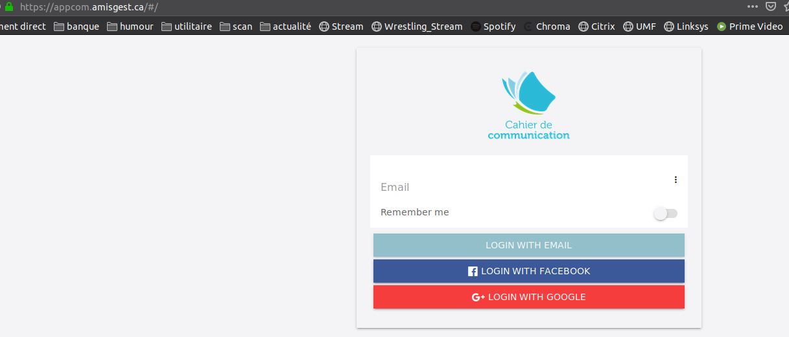MFA et Facebook
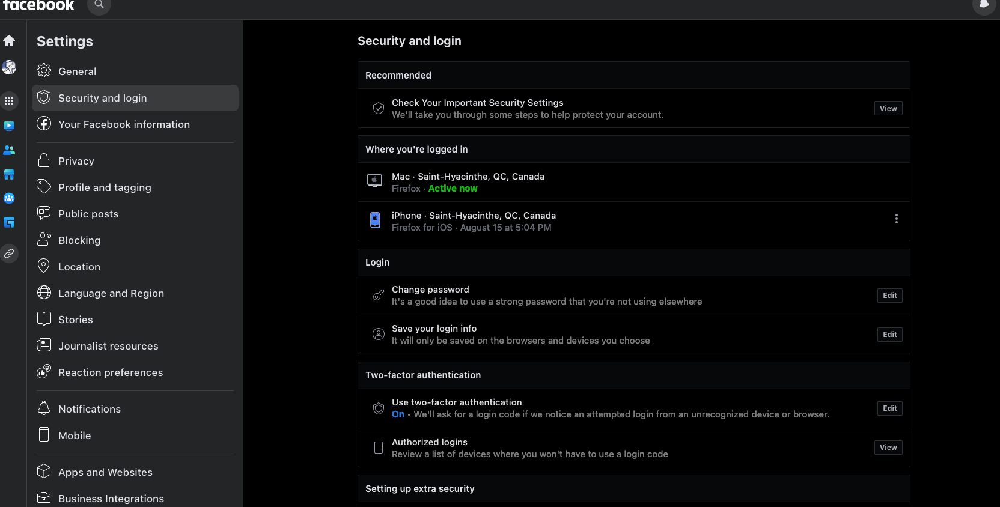En ce qui concerne Google :
- Utilisez les moteurs de recherche comme DuckDuckGo, Qwant ou StartPage
- Utilisez des alternatives comme ProtonMail qui offre des versions gratuites convenables
- Même Microsoft s'est moqué de Gmail